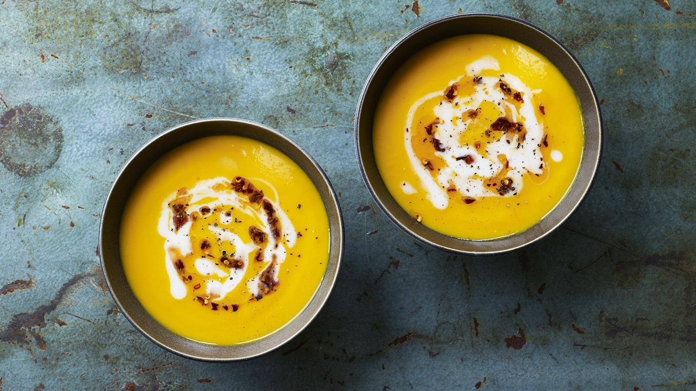

Sweet Potato Soup

Description
A quick and easy sweet potato recipe, brought to us by the BBC. This recipe is suitable for vegans!
Ingredients
- 1 tbsp olive oil
- 1 onion, roughly chopped
- 2 large carrots, peeled and roughly chopped
- 4cm/1½ inches fresh root ginger, finely chopped
- 1 garlic clove, crushed
- ½ tsp dried red chilli flakes
- 700g/1lb 10oz sweet potatoes, peeled and cubed
- 1.2 litres/2 pints vegetable stock
- Salt and freshly ground black pepper
Steps
- Heat the oil in a large, lidded saucepan over a medium-high heat. Add the onion and carrots and cook until softened. Stir in the ginger, garlic and chilli flakes and fry for 2–3 minutes, or until fragrant.
- Stir in the sweet potatoes and stock. Turn up the heat and bring the pan to the boil. Reduce the heat to low and simmer with the lid on for 15 minutes, or until the sweet potato is tender.
- Remove the pan from the heat and blend the soup, using a stick blender, until smooth. Alternatively, tip it into a food processor and blend. Season to taste and serve.